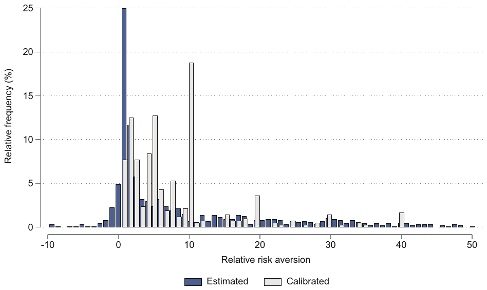
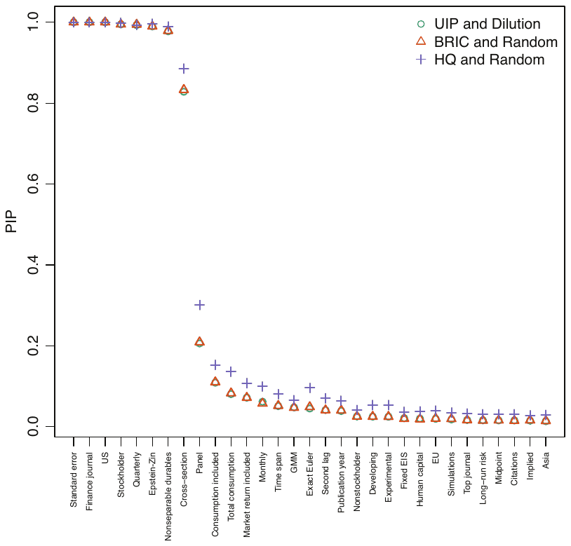

Ali Elminejad, Tomas Havranek, and Zuzana Irsova (2025), "Relative Risk Aversion: A Meta-Analysis." Journal of Economic Surveys, 39(5): 2315-2333. https://doi.org/10.1111/joes.12689.
Ali Elminejad1 | Tomas Havranek2,3,4 | Zuzana Irsova2
1Department of Economics, Nazarbayev University, Astana, Kazakhstan | 2Institute of Economic Studies, Faculty of Social Sciences, Charles University, Prague, Czechia | 3Centre for Economic Policy Research, London, UK | 4Meta-Research Innovation Center at Stanford, Stanford, California, USA
Correspondence: Zuzana Irsova (zuzana.irsova@ies-prague.org)
Received: 1 November 2024 | Revised: 9 December 2024 | Accepted: 16 December 2024
Funding: Elminejad and Havranek acknowledge support from the Czech Science Foundation (grant 24-11583S). Irsova acknowledges support from the Czech Science Foundation (grant 23-05227M). The project was also supported by the Charles University Research Centre program UNCE24/SSH/020, Cooperatio program ECON, and the NPO "Systemic Risk Institute" number LX22NPO5101 funded by the European Union—Next Generation EU (Ministry of Education, Youth and Sports, NPO: EXCELES).
Abstract
Estimates of relative risk aversion vary widely, but no study has attempted to quantitatively trace the sources of the variation. We collect 1021 estimates from 92 studies that use the consumption Euler equation to measure relative risk aversion and that disentangle it from intertemporal substitution. We show that calibrations of risk aversion are systematically larger than estimates thereof. Moreover, reported estimates are systematically larger than the underlying risk aversion because of publication bias. After correction for the bias, the literature suggests a mean risk aversion of 1 in economics and 2–7 in finance contexts. The reported estimates are driven by the characteristics of data (frequency, dimension, country, stockholding) and utility (functional form, treatment of durables). To obtain these results, we use recently developed techniques to correct for publication bias and Bayesian model averaging techniques to account for model uncertainty.
JEL Classification: C83, D81, D90
Keywords: Bayesian model averaging, Epstein–Zin preferences, Euler equation, meta-analysis, publication bias, risk aversion
1 | Introduction
Risk aversion is a key concept in economics and finance. Almost every structural model requires assumptions concerning relative risk aversion, and dozens of studies have estimated the corresponding coefficient using the consumption Euler equation. Yet no consensus on the benchmark calibration values has emerged, as Figure 1 demonstrates: Common values are 2.5, 5, and 10, but 1 and 20 also appear often. Remarkably, the distribution of calibrations does not match the distribution of estimates. The most common estimated value is 1, while the most common calibration is 10. But the figure also shows that almost every calibrated value up to at least 50 can be justified by some empirical estimates. There are few guidelines on the calibrations of relative risk aversion in different contexts, and no quantitative synthesis (or meta-analysis) has attempted to shed light on the issue. That is what we attempt to deliver in this paper.
The absence of a meta-analysis on the topic can perhaps be explained by the sheer size of the literature on risk aversion. Risk aversion can be estimated using lab experiments, surveys, labor-supply behavior, auction behavior, choices in insurance contracts, option prices, and game show contestant behavior (see, e.g., Zhang et al. 2014). We focus on the consumption Euler equation approach, which constitutes the benchmark framework employed in economics and finance. The problem is that most studies in this literature assume power utility, which means that relative risk aversion equals the reciprocal of the elasticity of intertemporal substitution, and hence the interpretation of the estimated parameter is unclear. We thus concentrate on the subset of the literature that separates risk aversion from intertemporal substitution. The separation is typically done by employing Epstein–Zin preferences (Epstein and Zin 1989;1991), but can also be achieved using habits in consumption, expected utility with a reference level of consumption, ambiguity aversion, or disappointment aversion. Even this subset of the Euler equation literature yields 1021 estimates from 92 studies. To construct Figure 1, we also collect 446 calibrations from 200 studies, once again, only those that break the link between risk aversion and intertemporal substitution.

Four previous studies are intimately related to the analysis we present. Havranek (2015) conducts a meta-analysis of the elasticity of intertemporal substitution in consumption. After correcting the literature for various biases, he argues that the best guess concerning the mean elasticity of substitution is 1/3. Because almost all studies in his sample use power utility, the finding translates to the relative risk aversion of 3—if we accept the argument by Kocherlakota (1990), contrary to Hall (1988), that the parameter derived from the corresponding Euler equation is more informative about risk aversion than intertemporal substitution. Ascari et al. (2021) present a recent and meticulous estimation, robust to weak instruments, of all parameters that can be derived from the consumption Euler equation. They find that the potential range for relative risk aversion is wide. Brown et al. (2024) conduct a meta-analysis of loss aversion, a concept related to but distinct from relative risk aversion as commonly used in economics, and find that the mean loss aversion is around 2 after correction for several biases. Imai et al. (2021) present a meta-analysis of the present bias, which some argue (prominently Dean and Ortoleva 2019) is strongly related to risk preferences. The corrected mean present bias recovered by Imai et al. (2021) is between 0.95 and 0.97.
Key issues for meta-analysis are the twin problems of publication bias and p-hacking. Publication bias describes a situation in which authors, referees, or editors, intentionally or not, sometimes refuse to publish estimates that are statistically insignificant or inconsistent with the theory (e.g., have the wrong sign). P-hacking is the effort by authors, again intentional or not, to produce publishable results: for example, by trying different subsamples or control variables until the estimate reaches statistical significance. McCloskey and Ziliak (2019) invoke a nice analogy to the Lombard effect in psychoacoustics: Speakers involuntarily increase their vocal effort in the presence of noise. In a similar way, researchers can respond to noise in their data or techniques and try harder till they obtain a point estimate large enough to compensate for the large standard error. Note that publication bias and p-hacking are observationally equivalent, so for parsimony, we will use the term publication bias to describe both, as is common in the meta-analysis literature. Many studies have recently discussed how publication bias can exaggerate empirical estimates in economics (Brodeur et al. 2016; Bruns and Ioannidis 2016; Blanco-Perez and Brodeur 2020; Brodeur et al. 2020; Card et al. 2018; Christensen and Miguel 2018; DellaVigna et al. 2019; DellaVigna and Linos 2022; Neisser 2021; Stanley et al. 2021; Stanley et al. 2022; Xue et al. 2020; Ugur et al. 2020), and the exaggeration can be twofold or more (Bartos et al. 2024; Gechert et al. Forthcoming; Ioannidis et al. 2017). Publication bias is natural, common in economics, and does not imply cheating or any ulterior motives on the part of the researchers. But it is a serious problem for the interpretation of the results in the literature, a problem meta-analysis can tackle.
Most meta-analysis techniques used for publication bias correction in economics and finance are related to the intuition of the Lombard effect and regress estimates on their standard errors (meta-regression). Evidence of a nonzero slope is commonly taken as evidence for publication bias, and the constant in the regression measures the mean estimate conditional on maximum precision, often interpreted as the mean corrected for the bias. Most techniques used to estimate Euler equations imply that estimates and standard errors should be statistically independent quantities in the absence of selective reporting. However, as shown by Andrews and Kasy (2019) and Stanley and Doucouliagos (2014), the problem with such a strategy is that publication bias can be a nonlinear function of the standard error. To address this problem, we employ recently developed alternative tests for publication bias: the selection model by Andrews and Kasy (2019), the weighted average of adequately powered estimates (Ioannidis et al. 2017), the stem-based technique (Furukawa 2021), the endogenous kink model (Bom and Rachinger 2019), and the p-uniform* technique (van Aert and van Assen 2021).
In the second part of the analysis, we investigate the heterogeneity in the reported estimates of relative risk aversion. We identify 30 characteristics of data, specification, estimation, and publication that reflect the context in which the estimates are obtained and that may affect the estimates. The characteristics are so numerous because of the many choices researchers have to make when specifying their models. In consequence, substantial model uncertainty arises in meta-analysis when we want to relate estimates of risk aversion to estimation context. As a solution, we use Bayesian model averaging (see, e.g., Steel 2020; Zeugner and Feldkircher 2015), which is the natural response to model uncertainty in a Bayesian setting; moreover, it is computationally less cumbersome than frequentist alternatives. Bayesian model averaging also allows us to partially address collinearity by employing the dilution prior (George 2010), which penalizes models with a small determinant of the correlation matrix.
We find substantial publication bias in the empirical literature on risk aversion. The mean exaggeration due to the bias is striking: about seven-fold in both economics and finance. The corrected mean relative risk aversion is 1 in the economics literature and 2–7 in the finance literature (where different correction techniques give quantitatively different results, but all agree that publication bias is strong). Note, however, that the corrected means are much closer to reported median estimates: 1.3 for economics and 18 for finance, which may reflect the importance of heterogeneity giving rise to outliers in some contexts. The correction for publication bias further widens the gap between typical estimates and typical calibrations presented earlier in Figure 1. In particular, the value of 10 most frequently used for calibration is inconsistent with the bulk of empirical estimates. In contrast, the second most common calibration, 5, is well within the plausible range of estimates suggested by the literature in finance (but not economics) contexts. Note also that the mean estimate of 1 obtained for economics does not lend itself to the recommendation of the logarithmic utility function in that field. The reason is, as we have mentioned earlier, that the elasticity of intertemporal substitution is typically not 1 but 1/3 (Havranek 2015; Havranek et al. 2015). In finance contexts, power utility with relative risk aversion set at 3 thus seems relatively consistent with empirical evidence.
When we allow for heterogeneity by employing Bayesian model averaging, we confirm the finding of strong publication bias and a substantial difference in estimated risk aversion between economics and finance contexts—even after other aspects of data and methods are controlled for. In addition, studies that focus on stockholders tend to find substantially smaller values of risk aversion, which is consistent with both intuition and previous results (such as Mankiw and Zeldes 1991). Finally, reported estimates of relative risk aversion are systematically related to data characteristics (frequency, dimension, and country coverage) and the definition of the utility function (the assumption of separability between durables and nondurables and the use of Epstein–Zin preferences in contrast to other methods for separating risk aversion from intertemporal substitution). The results are reasonably robust to alternative priors for Bayesian model averaging.
2 | Data
Details on the estimation of relative risk aversion in the context of the consumption Euler equation are available in the Supplement (Section 1); the estimation approaches followed by most studies are also clearly described by Epstein and Zin (1991) and Vissing-Jørgensen and Attanasio (2003). A more general overview of modeling risk aversion is presented by O'Donoghue and Somerville (2018). Section A provides details on the way we search the literature for estimates of relative risk aversion. Following the guidelines of Havranek et al. (2020) and Irsova et al. (2024), we start with a search query in Google Scholar, which we prefer over alternative databases because of its universal coverage and full-text capabilities. The search query yields more than 3500 studies. For feasibility, we only inspect the first 1500 studies returned by the search. We read the abstracts of these studies and download those that indicate any chance of containing empirical estimates of risk aversion (about a half of the examined studies).
We read the downloaded studies and include those that conform to the following three criteria. First, the study must use the consumption Euler equation to obtain an empirical estimate of the coefficient of relative risk aversion. Second, the estimate must be reported together with the corresponding standard error or any statistics from which the standard error can be computed. Third, the study must separate risk aversion from intertemporal substitution. We collect both published and unpublished papers and terminate the search on May 16, 2022. See Figure A1 for details. The search yields 92 papers (called "primary studies" in the meta-analysis terminology and listed in Table A1), which together provide 1021 estimates of relative risk aversion. The sample of calibration studies is assembled using a similar search strategy with the following differences: In the search query, we replace the word "estimate" with "calibration," restrict our attention to published papers, and stop once we collect 200 usable studies (ranked by the order they appear in the Google Scholar reply to our query). This approach yields 446 individual calibrated values of relative risk aversion.
In addition to calibrations, estimates, and the estimates' standard errors, we also collect 30 variables, described in Section 4, that reflect the context in which the estimates are obtained in primary studies: the characteristics of data, specification, estimation, and publication. This means we collect manually more than 30,000 data points. To reduce the danger of mistakes and typos, two of the co-authors collect the data independently, and the third coauthor resolves inconsistencies between these two datasets. The resulting clean dataset is available in an online appendix at meta-analysis.cz/risk together with the code used in this analysis and the list of 200 calibration studies.
Throughout the paper, we distinguish between estimates obtained in economics and finance contexts. The precise boundary is hard to draw: Estimates in economics are often, but not always, derived from approaches that focus on the entire economy, while finance estimates tend to focus almost exclusively on asset prices (see the Supplement for details). We choose a classification based on the journal in which the primary or calibration study is published and follow the categories defined by the Web of Science. If in the Web of Science, the journal is included in both categories, we follow the classification of the "most similar" journal according to the Scientific Journal Ranking. If a study is unpublished (15 primary studies in total), we classify it based on the prevailing publications of the corresponding author. In such a way, each study can be unambiguously classified into either economics or finance.
| Panel A: Estimates | Observations | Mean | Median | Standard deviation |
|---|---|---|---|---|
| All 92 studies | 1021 | 23.36 | 3.77 | 98.58 |
| Economics (58 studies) | 590 | 7.50 | 1.26 | 30.74 |
| Finance (34 studies) | 431 | 45.05 | 17.82 | 144.71 |
| Panel B: Calibrations | Observations | Mean | Median | Standard deviation |
|---|---|---|---|---|
| All 200 studies | 446 | 14.33 | 6.00 | 30.10 |
| Economics (115 studies) | 237 | 17.14 | 6.00 | 35.74 |
| Finance (85 studies) | 209 | 11.12 | 6.00 | 21.66 |
Note: We only consider studies that separate risk aversion from intertemporal substitution. Studies are classified into economics and finance categories based on the journals they were published in and using the journal classification of the Web of Science. If in the Web of Science, the journal is included in both categories, we follow the classification of the "most similar" journal according to the Scientific Journal Ranking. If a study is unpublished (15 studies in total), we classify it based on the prevailing publications of the corresponding author. In the meta-analysis, we winsorize estimates at the 5% level. Summary statistics for benchmark calibrations from each study in Panel B are reported in the Supplement (Table B2).
Table 1 presents the summary statistics of estimates and calibrations, and Figure 2 shows that the estimates vary widely both within and across studies. As we have noted in the discussion of Figure 1, calibrations of risk aversion in the literature tend to be larger than most empirical estimates. But Table 1 also shows that the story differs between economics and finance. In economics, calibrations are indeed much larger than estimates, both in terms of mean and median values; the corresponding histogram is available in the Supplement (Figure B1). In finance, the opposite is the case: estimates overtop calibrations. Calibrations in both fields are very similar to each other, with a median of 6 and mean around 15 (The pattern holds for the set of benchmark calibrations from each study; see the Supplement.) While even in finance, the estimates of risk aversion between 1 and 10 are the most common, values around 20 and larger are also routinely reported.
Curiously, therefore, calibrations of relative risk aversion in both fields seem to have little basis in the distribution of the empirical estimates of the parameter in a given field. Instead, many calibrations simply quote Mehra and Prescott (1985), who argue that 10 is a reasonable upper bound for the coefficient of relative risk aversion. Because large risk aversion is often sought for calibration (e.g., to help explain the equity premium puzzle), it follows that 10 is the most frequently used calibration value by a large margin. Values of 2.5, 5, and 20 present the most common robustness checks to the baseline calibration. Our goal in this paper is to help reconnect calibrations of risk aversion to empirical estimates thereof, and the first necessary step is the correction of the estimates for publication selection bias.
3 | Publication Bias
Economists expect that most people are risk-averse, and hence that the mean coefficient of relative risk aversion in any group is positive. This belief is reflected by the 446 calibrations shown earlier in Figure 1: All of them are positive. Negative or zero risk aversion bodes well with few economics and finance models. Of course, the underlying mean coefficient of relative risk aversion is most likely substantially positive. But unless it is huge, researchers will sometimes run into estimation contexts in which the estimate of the coefficient turns out to be insignificantly different from zero or even negative. Noise in the data or methods will produce such counter-intuitive results from time to time. In a similar way, noise will also produce estimates that are too large and away from the true mean. The problem is that while it is difficult to identify the implausibly large estimates (no upper threshold exists for risk aversion), researchers immediately spot and investigate those that are negative or statistically insignificant. Given such unintuitive results, researchers may choose not to report them, or try a different specification in the hope of obtaining results that are consistent with their priors. Such a censoring drives the mean reported risk aversion upwards from the true value, and this is what meta-analysts call publication bias (Card and Krueger 1995; Stanley 2001).
The process leading to publication bias is not necessarily detrimental to science, and certainly it does not need to involve any ulterior motives on the part of the researchers. In many cases it will improve the inference of an individual study if it does not focus on negative or insignificant estimates of relative risk aversion. After all, these estimates are likely to be caused by sampling error, random heterogeneity, or some problems in data or methods. But, as implied by the calibrations described in the Introduction, quite often researchers need large estimates of risk aversion to fit their models. Imprecise and large estimates are therefore likely to be treated more favorably, and more likely to be reported, than imprecise and small estimates. Thus, at the level of the entire literature, a bias arises that exaggerates the true mean effect.
Figure 2. Estimates of risk aversion vary both across and within studies. Note: The length of each box represents the interquartile range (P25–P75), and the dividing line inside the box is the median value. The whiskers represent the highest and lowest data points within 1.5 times the range between the upper and lower quartiles. For ease of exposition, outliers are excluded from the figure but included in all statistical tests.
How to test and correct for publication bias? All existing methods for the identification and reduction of publication bias have their limitations. The histogram of the estimates shown in Figure 1 does not really help, though it suggests that the bias is not universal: Some negative estimates of risk aversion do appear in the literature. A neat way to measure publication bias is to compare the results of original studies and pre-registered replications (Kvarven et al. 2020), the latter being unlikely to suffer from much bias. But there are no pre-registered replications of studies estimating relative risk aversion from the Euler equation; in general, pre-registration is most efficient in the experimental literature where researchers cannot inspect their data prior to pre-registration (Olken 2015). To correct for the bias, we thus rely on techniques traditionally used by medical researchers and new methods recently developed by econometricians and psychologists.
Figure 3. The funnel plot suggests publication bias. Note: In the absence of publication bias (and any small-sample and heterogeneity-related biases), the plot should form a symmetrical inverted funnel. Outliers are excluded from the figure for ease of exposition but included in all tests. The vertical line denotes the value of 1. [Colour figure can be viewed at wileyonlinelibrary.com]
The starting point is a visual examination of the so-called funnel plot, often used in medical research (Egger et al. 1997; Stanley and Doucouliagos 2010). The funnel plot, Figure 3, is a scatter plot of point estimates on the horizontal axis and the estimates' precision (reciprocal of the standard error) on the vertical axis. In the absence of systematic heterogeneity, which will be examined in the next section, the most precise estimates should be close to the underlying mean coefficient of relative risk aversion. As precision decreases, the estimates should be more widely dispersed around the true mean value. Because in the absence of publication bias, all estimates have the same chance of being reported, the funnel will be symmetrical: All imprecise estimates are published, both those that are negative and those that are huge and positive. Figure 3 shows that, first, the funnel is asymmetric, which is consistent with publication bias among the reported estimates of risk aversion. Second, the most precise estimates are concentrated around 1 (represented by the vertical line).
Table 2 shows the results of more formal tests of funnel asymmetry and the underlying risk aversion beyond publication bias. The tests are regressions of estimates on standard errors and can also be interpreted as related to the intuition of the Lombard effect discussed in the Introduction (researchers increase their specification search effort in response to noise in their data or methods). The estimated slope in the regression measures the extent of publication bias. The intercept can be interpreted as the mean coefficient of relative risk aversion corrected for publication bias: If we assume that publication bias is indeed a linear function of the standard error. (This is a strong assumption that we will later relax; also, in the next section, we will add controls for different aspects of heterogeneity, which will not affect our results regarding the relation between estimates and standard errors.) We account for the obvious heteroskedasticity by weighting the regressions by inverse variance (Stanley and Doucouliagos 2014;2015). We employ the following four specifications: standard weighted least squares, study-level fixed effects (to filter out unobserved study-level heterogeneity), study-level between effects, and a specification that additionally weights estimates by the inverse of the number of estimates reported by each study, thus giving each study the same weight. All specifications except between effects report standard errors clustered at the study level; for the first and last specification, we also report confidence intervals based on wild bootstrap.
In all cases, we obtain estimated coefficients for publication bias that are positive and large, in line with the funnel plot. Most of them are also statistically significant at the 5% level. Given that this test for publication bias is known to have relatively low power (Stanley 2008), the results are consistent with substantial bias. The corrected mean coefficient of relative risk aversion is around 1 for economics and 1–3 for finance, compared with uncorrected means of 7.5 and 45, respectively. (Note, however, that the corrected means are much closer to reported median estimates: 1.3 for economics and 18 for finance, which may reflect the importance of heterogeneity giving rise to outliers in some contexts.) The estimated exaggeration due to publication bias is striking and much larger than what is typical in economics: Ioannidis et al. (2017) report that the mean exaggeration due to publication bias is twofold. Next, we relax the assumption that publication bias is a linear function of the standard error (used without qualification by many early meta-analyses in economics and finance, such as Havranek and Irsova 2010 and Irsova and Havranek 2010), which has been criticized by Andrews and Kasy (2019) and Stanley and Doucouliagos (2014). In doing so, we rely on recently developed alternative models of publication bias.
| Panel A: All studies | WLS | FE | BE | Study |
|---|---|---|---|---|
| Standard error | 1.865∗∗∗ | 2.287∗∗∗ | 2.837 | 3.062∗∗∗ |
| (publication bias) | (0.362) | (0.713) | (1.760) | (0.893) |
| [0.956, 2.577] | [1.251, 4.900] | |||
| Constant | 1.199∗∗∗ | 1.084∗∗∗ | 1.590∗∗∗ | 1.533∗∗∗ |
| (mean corrected RRA) | (0.257) | (0.194) | (0.235) | (0.412) |
| [0.725, 2.130] | [0.673, 2.476] | |||
| Observations | 1021 | 1021 | 1021 | 1021 |
| Studies | 92 | 92 | 92 | 92 |
| Panel B: Economics | WLS | FE | BE | Study |
| Standard error | 1.392∗∗∗ | 1.411 | 4.119∗∗∗ | 3.604∗∗∗ |
| (publication bias) | (0.540) | (1.146) | (1.361) | (0.827) |
| [0.383, 2.506] | [2.007, 5.293] | |||
| Constant | 1.085∗∗∗ | 1.082∗∗∗ | 0.714∗∗∗ | 0.822∗∗∗ |
| (mean corrected RRA) | (0.261) | (0.211) | (0.178) | (0.243) |
| [0.654, 2.059] | [0.351, 1.464] | |||
| Observations | 590 | 590 | 590 | 590 |
| Studies | 58 | 58 | 58 | 58 |
| Panel C: Finance | WLS | FE | BE | Study |
| Standard error | 1.859∗∗∗ | 3.476∗∗∗ | 0.817 | 2.168 |
| (publication bias) | (0.449) | (0.169) | (3.061) | (1.654) |
| [0.050, 2.895] | [−1.197, 5.548] | |||
| Constant | 2.390∗∗∗ | 1.107∗∗∗ | 3.223∗∗∗ | 2.888∗∗∗ |
| (mean corrected RRA) | (0.675) | (0.134) | (0.423) | (0.732) |
| [0.812, 4.006] | [1.062, 4.890] | |||
| Observations | 431 | 431 | 431 | 431 |
| Studies | 34 | 34 | 34 | 34 |
Note: We regress estimates of relative risk aversion on their standard errors (weighted by inverse variance). Standard errors, clustered at the study level, are reported in parentheses. Study = the inverse of the number of estimates reported per study is used as an additional weight. In square brackets, we show the 95% confidence interval from wild bootstrap (Roodman et al. 2019). Abbreviations: BE = study between effects; FE = study fixed effects; RRA, relative risk aversion; WLS, standard weighted least squares. ∗ p < 0.10, ∗∗ p < 0.05, ∗∗∗ p < 0.01.
We use five alternative techniques for publication bias correction. First, the weighted average of adequately powered estimates by Ioannidis et al. (2017). The technique estimates retrospective power for all estimates and yields a result that is the average of the estimates with power above 80% (weighted by inverse variance). Second, the selection model by Andrews and Kasy (2019). This rigorously founded technique estimates the probability that negative and insignificant estimates are not reported; the probability is then used to upweight these estimates. Third, the stem-based technique by Furukawa (2021). The technique exploits the trade-off between bias and variance: When more imprecise studies are added, publication bias increases, but variance decreases because more estimates are available. Furukawa (2021) minimizes the corresponding mean squared error that is the sum of bias and variance. Fourth, the endogeneous kink model by Bom and Rachinger (2019). The technique, which is an extension of the PEESE method due to Stanley and Doucouliagos (2014), assumes that the relationship between estimates and standard errors is linear when precision is low but that no relationship exists when precision is sufficiently high. For example, if the p value is 0.001, publication probability is not affected by small changes in the standard error. Fifth, the p-uniform* model by van Aert and van Assen (2021). The technique, developed in psychology, works with the distribution of p values and uses the statistical principle that the distribution should be uniform at the true mean value of the coefficient of relative risk aversion; it can be thought of as a simplified selection model.
| Panel A: All studies | Ioannidis et al. (2017) | Andrews and Kasy (2019) | Furukawa (2021) | Bom and Rachinger (2019) | van Aert and van Assen (2021) |
|---|---|---|---|---|---|
| Mean corrected RRA | 1.318∗∗∗ | 0.960∗∗∗ | 1.467∗∗∗ | 1.199∗∗∗ | 0.367∗∗∗ |
| (0.250) | (0.035) | (0.951) | (0.046) | [0.002] | |
| Observations | 1021 | 1021 | 1021 | 1021 | 1021 |
| Studies | 92 | 92 | 92 | 92 | 92 |
| Panel B: Economics | Ioannidis et al. (2017) | Andrews and Kasy (2019) | Furukawa (2021) | Bom and Rachinger (2019) | van Aert and van Assen (2021) |
| Mean corrected RRA | 1.172∗∗∗ | 0.910∗∗∗ | 0.474∗∗∗ | 1.085∗∗∗ | 0.366∗∗∗ |
| (0.250) | (0.030) | (0.390) | (0.052) | [0.002] | |
| Observations | 590 | 590 | 590 | 590 | 590 |
| Studies | 58 | 58 | 58 | 58 | 58 |
| Panel C: Finance | Ioannidis et al. (2017) | Andrews and Kasy (2019) | Furukawa (2021) | Bom and Rachinger (2019) | van Aert and van Assen (2021) |
| Mean corrected RRA | 2.535∗∗∗ | 11.196∗∗∗ | 6.100∗∗∗ | 2.390∗∗∗ | 0.625∗∗∗ |
| (0.662) | (1.212) | (0.885) | (0.112) | [0.008] | |
| Observations | 431 | 431 | 431 | 431 | 431 |
| Studies | 34 | 34 | 34 | 34 | 34 |
Note: Standard errors are reported in parentheses; the p-uniform* technique due to van Aert and van Assen (2021) only yields p values, which we report in square brackets. For the Andrews and Kasy (2019) approach, we assume that underlying effects have a t-distribution and that 1.96 is the only threshold for t-statistics that matters for publication decisions. Abbreviation: RRA, relative risk aversion. ∗ p < 0.10, ∗∗ p < 0.05, ∗∗∗ p < 0.01.
The results of the alternative tests are shown in Table 3. All tests corroborate strong publication bias: The corrected mean coefficients of relative risk aversion are always much smaller than uncorrected means shown earlier in Table 1. But the individual results vary. The p-uniform* technique yields values of risk aversion below 1 for both economics and finance. The selection model yields a large estimate for finance, 11. The remaining results are more consistent and suggest relative risk aversion around 1 in economics and 2–6 in finance. Finally, in the Supplement we also apply two new tests of p-hacking by Elliott et al. (2022). (see Table C1; Tables C2 and C3 additionally include specification tests of the Andrews-Kasy model.) These advanced tests have relatively low power and only test p-hacking without estimating the corrected risk aversion. Using these tests, we reject the hypothesis of no bias in the entire sample but not in the individual subsamples of economics and finance studies.
4 | Heterogeneity
Estimates and standard errors can be correlated because of publication bias but also because of heterogeneity in the literature: In other words, meta-regressions in the previous section may suffer from omitted-variable bias. To address this issue, we collect 30 aspects of the context in which the estimates are obtained. Using these additional variables, we seek answers to the following three questions: Are our findings regarding publication bias robust to heterogeneity? Do some aspects of data or methods affect the reported estimates systematically? What is the literature's best guess regarding relative risk aversion in various contexts after correction for publication bias?
The variables are summarized in Table 4 and discussed in detail in the Supplement (Section 3.1). For ease of exposition, we divide them into four groups as follows: data characteristics, specification characteristics, estimation techniques, and publication characteristics. The list of variables that control for the context in risk aversion estimation is potentially unlimited, but we do our best to account for differences that are most commonly discussed in the literature. A correlation plot in the Supplement (Figure D1) shows that even with so many variables, collinearity is likely not a major issue for our analysis. Even so, we employ techniques that take collinearity into account.
| Variable | Description | Mean | SD |
|---|---|---|---|
| Standard error | The standard error of the estimated coefficient of relative risk aversion. | 76.65 | 730.63 |
| Data characteristics | |||
| Time span | The logarithm of the time span of the data used to estimate RRA. | 3.45 | 0.92 |
| Midpoint | The logarithm of the median year of the data used minus the earliest median year observed in primary studies. | 3.82 | 0.63 |
| Panel | = 1 if panel data are used (reference category: Time series). | 0.04 | 0.19 |
| Cross-section | = 1 if cross-sectional data are used (reference category: Time series). | 0.20 | 0.40 |
| Monthly | = 1 if data frequency is monthly or higher (reference category: Annual). | 0.25 | 0.43 |
| Quarterly | = 1 if data frequency is quarterly (reference category: Annual). | 0.50 | 0.50 |
| United States | = 1 if the estimate relates to the United States (reference category: Other countries). | 0.74 | 0.44 |
| EU | = 1 if the estimate relates to European countries (reference category: Other countries). | 0.11 | 0.31 |
| Asia | = 1 if the estimate relates to developed Asian countries (reference category: Other countries). | 0.03 | 0.18 |
| Developing | = 1 if the estimate relates to developing countries, including China (reference category: Other countries). | 0.06 | 0.24 |
| Specification characteristics | |||
| Epstein–Zin | = 1 if preferences are of the Epstein–Zin type (the remaining estimates are derived from specifications with internal habits, expected utility with a reference level of consumption, ambiguity aversion, or disappointment aversion). | 0.90 | 0.30 |
| Long-run risk | = 1 if estimation features long-run risks. | 0.32 | 0.47 |
| Fixed EIS | = 1 if the value of the elasticity of intertemporal substitution is fixed when estimating RRA. | 0.25 | 0.43 |
| Nonseparable durables | = 1 if the model allows for nonseparability between durable and nondurable consumption. | 0.13 | 0.33 |
| Total consumption | = 1 if total consumption is used instead of nondurable consumption. | 0.10 | 0.30 |
| Exact Euler | = 1 if the exact Euler equation is estimated instead of the log-linearized one. | 0.37 | 0.48 |
| Human capital | = 1 if human capital is accounted for in the estimation. | 0.10 | 0.30 |
| Stockholder | = 1 if the estimate relates to stockholders or wealthy households (reference category: Mixed sample). | 0.12 | 0.32 |
| Nonstockholder | = 1 if the estimate relates to nonstockholders or poor households (reference category: Mixed sample). | 0.05 | 0.21 |
| Estimation techniques | |||
| Experimental | = 1 if the estimate is based on (quasi-)experimental data. | 0.02 | 0.15 |
| Implied | = 1 if the value of RRA is not reported explicitly but can be computed from other reported parameters. | 0.12 | 0.32 |
| GMM | = 1 if the generalized method of moments is used (reference category: OLS). | 0.59 | 0.49 |
| Simulations | = 1 if nonparametric simulation-based methods are used (reference category: OLS). | 0.17 | 0.37 |
| Second lag | = 1 if only second or higher lags are included among instruments. | 0.16 | 0.36 |
| Market return included | = 1 if market return is included among instruments. | 0.32 | 0.47 |
| Consumption included | = 1 if consumption is included among instruments. | 0.35 | 0.48 |
| Variable | Description | Mean | SD |
|---|---|---|---|
| Publication characteristics | |||
| Publication year | The logarithm of the year when the study first appeared in Google Scholar minus the year when the earliest study in our dataset appeared in Google Scholar. | 2.84 | 0.63 |
| Top journal | = 1 if the estimate comes from a study published in the top five economics or top three finance journals. | 0.30 | 0.46 |
| Finance journal | = 1 if the estimate is reported in a finance journal. | 0.42 | 0.49 |
| Citations | The logarithm of the number of per-year citations of the study, according to Google Scholar. | 1.72 | 1.40 |
Note: All estimates that we collect are derived from specifications that separate risk aversion from intertemporal substitution. The table excludes the definition and summary statistics of reference categories, which are omitted from Bayesian model averaging. Regarding the variable Finance journal, we use the classification of the Web of Science. If in the Web of Science, the journal is included in both economics and finance categories, we follow the classification of the "most similar" journal according to the Scientific Journal Ranking. Note that the mean for the standard error is driven by outliers; the median value is 2. Abbreviations: EIS, elasticity of intertemporal substitution; GMM, general method of moments; RRA, relative risk aversion; SD, standard deviation.
Because we have so many variables, we need to use methods that account for model uncertainty. While all of the variables we collect have been implicated in the literature to potentially affect the reported risk aversion, it is unclear whether all variables indeed belong to the best model. If not, then the effects of important variables will be imprecisely estimated, perhaps drastically so. A natural solution to model uncertainty arises in the Bayesian framework as Bayesian model averaging (see Steel 2020, for a great overview). Bayesian model averaging estimates many models that include various combinations of the explanatory variables we have collected and weights individual models by goodness of fit and parsimony. Because in our case there are too many possible models, we simplify this computationally demanding task by employing the Metropolis–Hastings algorithm of the bms package for R by Zeugner and Feldkircher (2015), which walks only through the most likely models. We also employ the dilution prior (George 2010), which accounts for collinearity by adding a weight that is proportional to the determinant of the correlation matrix of the variables included in the individual model. Bayesian model averaging can only be combined with the linear test of publication bias (not, e.g., with p-uniform* and other alternative methods), but we have shown in the previous section that the results of the linear tests are broadly consistent with more advanced alternative techniques. Recent applications of Bayesian model averaging in economics meta-analyses include Astakhov et al. (2019), Elminejad et al. (2023), Ehrenbergerova et al. (2023), Havranek et al. (2024), Kroupova et al. (2024), and Opatrny et al. (Forthcoming).
The results of Bayesian model averaging are summarized graphically in Figure 4; more details are available in the Supplement (Table D1 and Figure D2). The horizontal axis denotes cumulative posterior model probabilities: the weights received by each model. The most informative individual models, denoted by columns, therefore, are depicted on the left. Variables are sorted by posterior inclusion probability (the sum of posterior model probabilities of all models in which the variable is included) in descending order. This ordering means that the variables most useful in explaining the variation in estimated risk aversion are depicted at the top of the figure. The single most important variable is the standard error, which corroborates our previous results concerning publication bias: The correlation between estimates and standard errors cannot be explained by heterogeneity, and publication bias thus remains the most plausible explanation. In total, there are eight variables with posterior inclusion probability above 0.5, which means that these variables are systematically related to the published coefficients of relative risk aversion. The results of Bayesian model averaging can be sensitive to the priors used, but Figure 5 shows that posterior inclusion probabilities do not change much when we apply alternative priors sometimes used in the literature (see also Table D2).
Figure 4. Model inclusion in Bayesian model averaging. Note: The response variable is the reported estimate of relative risk aversion; all estimates that we collect are derived from specifications that separate risk aversion from intertemporal substitution. The columns denote individual models; variables are sorted by posterior inclusion probability in descending order. The horizontal axis denotes cumulative posterior model probabilities. The estimation is based on the agnostic unit information prior recommended by Eicher et al. (2011) and the dilution prior suggested by George (2010), which takes collinearity into account. Blue color (darker in grayscale) = the variable has a positive estimated sign. Red color (lighter in grayscale) = the variable has a negative estimated sign. No color = the variable is excluded from the given model. Table 4 presents a detailed description of the variables. The numerical results are reported in Table 5.
The numerical results of Bayesian model averaging are reported in the left-hand part of Table 5. The right-hand part shows a simple frequentist robustness check, in which we run ordinary least squares using only the variables with posterior inclusion probability above 0.5 in Bayesian model averaging. The robustness check is broadly consistent with the results of Bayesian model averaging, but finds borderline statistical significance for several of the variables. The point estimates, however, are similar and suggest large effects of these characteristics. We find that even if we control for estimation context, finance journals tend to report coefficients of relative risk aversion substantially larger than economics journals: by about 6. Another intuitive result is that stockholders are less risk-averse than nonstockholders. Again the difference in relative risk aversion is about 6. Next, we find that the results are driven by data and estimation characteristics: data dimension (cross-section vs. time series vs. panel data), data frequency (monthly vs. quarterly vs. annual), regional coverage (US vs. other countries), the specification of the utility function (Epstein–Zin vs. other approaches), and treatment of durables (separability vs. nonseparability). The het-
| Variable | Bayesian model averaging | Frequentist check (OLS) | ||||
|---|---|---|---|---|---|---|
| Post. mean | Post. SD | PIP | Coeff. | SE | p value | |
| Constant | −8.841 | N.A. | 1.000 | −9.050 | 3.108 | 0.004 |
| Standard error | 0.980 | 0.035 | 1.000 | 0.980 | 0.070 | 0.000 |
| Data characteristics | ||||||
| Time span | −0.041 | 0.217 | 0.049 | |||
| Midpoint | 0.003 | 0.084 | 0.014 | |||
| Panel | 1.037 | 2.229 | 0.207 | |||
| Cross-section | 3.424 | 1.866 | 0.833 | 4.098 | 1.841 | 0.026 |
| Monthly | −0.117 | 0.569 | 0.057 | |||
| Quarterly | 4.469 | 0.954 | 0.995 | 4.394 | 1.679 | 0.009 |
| United States | 6.064 | 1.004 | 1.000 | 5.924 | 1.498 | 0.000 |
| EU | 0.024 | 0.270 | 0.019 | |||
| Asia | 0.004 | 0.245 | 0.013 | |||
| Developing | −0.055 | 0.491 | 0.024 | |||
| Specification characteristics | ||||||
| Epstein–Zin | 5.488 | 1.370 | 0.991 | 5.592 | 3.390 | 0.099 |
| Long-run risk | 0.004 | 0.131 | 0.014 | |||
| Fixed EIS | 0.024 | 0.276 | 0.020 | |||
| Nonseparable durables | 4.834 | 1.372 | 0.979 | 5.008 | 3.354 | 0.135 |
| Total consumption | 0.207 | 0.801 | 0.080 | |||
| Exact Euler | 0.063 | 0.345 | 0.045 | |||
| Human capital | 0.018 | 0.239 | 0.017 | |||
| Stockholder | −5.768 | 1.341 | 0.995 | −5.769 | 3.659 | 0.115 |
| Nonstockholder | 0.053 | 0.482 | 0.024 | |||
| Estimation techniques | ||||||
| Experimental | −0.062 | 0.593 | 0.022 | |||
| Implied | −0.001 | 0.150 | 0.014 | |||
| GMM | −0.075 | 0.414 | 0.046 | |||
| Simulations | −0.005 | 0.231 | 0.017 | |||
| Second lag | −0.066 | 0.389 | 0.041 | |||
| Market return included | −0.116 | 0.486 | 0.070 | |||
| Consumption included | −0.195 | 0.628 | 0.108 | |||
| Publication characteristics | ||||||
| Publication year | 0.037 | 0.230 | 0.038 | |||
| Top journal | 0.001 | 0.143 | 0.015 | |||
| Finance journal | 6.358 | 0.949 | 1.000 | 6.297 | 1.565 | 0.000 |
| Citations | −0.001 | 0.045 | 0.015 | |||
| Observations | 1021 | 1021 | ||||
| Studies | 92 | 92 |
Note: The response variable is the reported estimate of relative risk aversion; all estimates that we collect are derived from specifications that separate risk aversion from intertemporal substitution. The left-hand panel applies BMA based on the unit information g-prior and the dilution model prior (Eicher et al. 2011; George 2010). See Zeugner and Feldkircher (2015) for a detailed description of the priors. The right-hand panel reports a frequentist check using ordinary least squares, which includes variables with PIPs above 0.5 in BMA. Standard errors in the frequentist check are clustered at the study level. Table 4 presents a detailed description of the variables. Abbreviations: PIP, posterior inclusion probability; SD, standard deviation; SE, standard error.

| Mean | 95% conf. int. | |
|---|---|---|
| Overall best practice | 3.74 | [0.99,6.50] |
| Economics | 1.10 | [−2.11, 4.30] |
| Finance | 7.31 | [4.28,10.33] |
| United States | 5.20 | [2.28, 8.11] |
| EU | 2.34 | [−0.56, 5.24] |
| Quarterly data | 5.95 | [1.97,9.92] |
| Economics, EU, quarterly | 1.80 | [−0.91, 4.51] |
| Finance, US, annual | 6.69 | [4.20,9.19] |
Note: The table uses the frequentist check of the benchmark BMA exercise to compute relative risk aversion conditional on selected aspects of data, methodology, and publication (see text for details). That is, the table attempts to answer the question what the mean risk aversion would look like if the literature was free of publication bias and all studies used the same strategy as the one we prefer. The 95% confidence intervals are reported in parentheses.
erogeneity results are described in more detail in the Supplement (Section 3.2).
Finally, we compute relative risk aversion implied by the literature for different settings after correction for publication bias and other potential biases. For this exercise, we use the results of the heterogeneity analysis and compute the corresponding fitted values from multiple meta-regression. To do so, we need to divide the variables reflecting heterogeneity into the following two groups: First, variables capturing structural, underlying heterogeneity. In other words, these variables (such as US vs. other countries, stockholders, etc.) reflect context and are not related to study quality or problems with data or methods. Second, variables related to estimate reliability. For example, if first lags are included among instruments, the estimate is likely to suffer from problems with time aggregation.
Regarding the second group of variables, we need to choose a specific value for each variable. This approach is inevitably subjective but we still believe it adds value to meta-analysis (Irsova et al. 2024). We plug zero for the standard error to approximately correct for publication bias. To give more weight to studies with larger datasets and newer data, we plug in sample maxima for the time span and midpoint of data. We prefer if exact Euler equations are used, first lags are not included among instruments, the elasticity of intertemporal substitution is not fixed, and the estimate is not obtained via simulation. We also prefer if the study was published recently, in a top journal, and is frequently cited. Because it is not clear what kind of preference specification constitutes best practice, we plug in 0.5 for Epstein–Zin preference to give equal weight to this and other approaches. All other variables are considered to reflect structural heterogeneity and thus are set to their sample means. Table 6 shows that such an exercise yields quite imprecise results, but the point estimate for economics is still around 1, consistent with our previous results. The implied estimate for finance is somewhat larger, around 7, but not far from the 2–6 range discussed in the previous section. The implied values of risk aversion for different contexts shown in Table 6 lie between 1 and 7.
5 | Conclusion
We provide the first meta-analysis of the literature estimating relative risk aversion. We focus on studies that use the consumption Euler equation and that break the link (present with power utility) between risk aversion and intertemporal substitution. This means that we mostly focus on estimates that employ Epstein–Zin preferences. The literature provides 1021 estimates reported in 92 studies; we also collect 446 calibrations of relative risk aversion from 200 studies. Our results suggest a wedge between estimates and calibrations: Calibrations are often larger than estimates, especially in the economics literature. The wedge increases substantially when we correct the estimates of risk aversion for publication selection bias: The corrected mean estimate is 1 for economics and 2–7 for finance, which are the values we recommend for calibration. The finding for economics is consistent with Chetty (2006), who argues that data on labor supply behavior impose an upper bound of 2 on relative risk aversion. Our results also suggest that the estimates are systematically correlated with the context in which they are obtained, such as data dimension (time-series vs. cross-section vs. panel data), data frequency (monthly vs. quarterly vs. annual), country coverage (US vs. Europe), general form of the utility function (Epstein–Zin vs. other approaches), treatment of durables (separability vs. nonseparability), and whether or not the researcher focuses on stockholders.
Three qualifications are in order. First, our classification of studies into economics and finance fields is crude and follows the classification of journals in which the studies are published. Two studies may use a similar strategy to identify relative risk aversion, but one can be published in an economics journal, the other in a finance journal. The advantage of the journal-based classification is its clarity and parsimony; a rule based on methodology or data would also inevitably be more subjective. The sharp difference between the distribution of estimates in economics and finance according to our definition suggests that the classification we use is informative. Second, we use more than one estimate from primary studies, which violates the standard meta-analysis assumption that all estimates are independent. We partially address this problem by clustering standard errors at the study level and using wild bootstrap. Third, the confidence intervals around our implied estimates of risk aversion across various contexts are wide, reflecting significant model uncertainty in the literature.
Acknowledgments
Ali Elminejad and Tomas Havranek acknowledge support from the Czech Science Foundation (Grant 24-11583S). Zuzana Irsova acknowledges support from the Czech Science Foundation (Grant 23-05227M). The project was supported by the Charles University Research Centre program UNCE24/SSH/020, Cooperatio program ECON, and the NPO "Systemic Risk Institute" number LX22NPO5101 funded by the European Union—Next Generation EU (Ministry of Education, Youth, and Sports, NPO: EXCELES).
Conflicts of Interest
The authors declare no conflicts of interest.
Data Availability Statement
Data and codes are available at meta-analysis.cz/risk.
References
- Albuquerque, R., M. Eichenbaum, V. X. Luo, and S. Rebelo. 2016. "Valuation Risk and Asset Pricing." Journal of Finance 71, no. 6: 2861–2904.
- Ampudia, M., R. Cooper, J. L. Blanc, and G. Zhu. 2018. "MPC Heterogeneity in Europe: Sources and Policy Implications." Working Paper 25082. National Bureau of Economic Research.
- Andersen, S., G. W. Harrison, M. I. Lau, and E. E. Rutström. 2018. "Multiattribute Utility Theory, Intertemporal Utility, and Correlation Aversion." International Economic Review 59, no. 2: 537–555.
- M Andreasen, M. 2012. "An Estimated DSGE Model: Explaining Variation in Nominal Term Premia, Real Term Premia, and Inflation Risk Premia." European Economic Review 56, no. 8: 1656–1674.
- Andreasen, M. M., J. Fernández-Villaverde, and J. F. Rubio-Ramírez. 2018. "The Pruned State-Space System for Non-Linear DSGE Models: Theory and Empirical Applications." Review of Economic Studies 85, no. 1: 1–49.
- Andrews, I., and M. Kasy. 2019. "Identification of and Correction for Publication Bias." American Economic Review 109, no. 8: 2766–2794.
- Ascari, G., L. M. Magnusson, and S. Mavroeidis. 2021. "Empirical Evidence on the Euler Equation for Consumption in the US." Journal of Monetary Economics 117, no. C: 129–152.
- Astakhov, A., T. Havranek, and J. Novak. 2019. "Firm Size and Stock Returns: A Quantitative Survey." Journal of Economic Surveys 33 (December): 1463–1492.
- Attanasio, O. P., and G. Weber. 1989. "Intertemporal Substitution, Risk Aversion and the Euler Equation for Consumption." Economic Journal 99, no. 395: 59–73.
- Augustin, P., and R. Tédongap. 2016. "Real Economic Shocks and Sovereign Credit Risk." Journal of Financial and Quantitative Analysis 51, no. 2: 541–587.
- Bakshi, G. S., and A. Naka. 1997. "An Empirical Investigation of Asset Pricing Models Using Japanese Stock Market Data." Journal of International Money and Finance 16, no. 1: 81–112.
- Bansal, R., A. R. Gallant, and G. Tauchen. 2007. "Rational Pessimism, Rational Exuberance, and Asset Pricing Models." Review of Economic Studies 74, no. 4: 1005–1033.
- Bansal, R., and I. Shaliastovich. 2013. "A Long-Run Risks Explanation of Predictability Puzzles in Bond and Currency Markets." Review of Financial Studies 26, no. 1: 1–33.
- Bansal, R., D. Kiku, and A. Yaron. 2007. "Risks for the Long Run: Estimation and Inference." Working Paper. Duke University.
- Bansal, R., D. Kiku, and A. Yaron. 2016. "Risks for the Long Run: Estimation With Time Aggregation." Journal of Monetary Economics 82, no. C: 52–69.
- Bansal, R., T. D. Tallarini, and A. Yaron. 2008. The Return to Wealth, Asset Pricing and the Intertemporal Elasticity of Substitution. Meeting Papers 918. Society for Economic Dynamics.
- Bartos, F., M. Maier, E.-J. Wagenmakers, et al. 2024. "Footprint of Publication Selection Bias on Meta-Analyses in Medicine, Environmental Sciences, Psychology, and Economics." Research Synthesis Methods 15, no. 3: 500–511.
- Bednarek, Z., and P. Patel. 2015. "Long-Run Risk, Durable Consumption Growth and Estimation of Risk Aversion." Working Paper. California Polytechnic State University.
- Biswas, A., and B. Mandal. 2016. "Estimating Preference Parameters From Stock Returns Using Simulated Method of Moments." Annals of Financial Economics 11, no. 01: 1650005.
- Blanco-Perez, C., and A. Brodeur. 2020. "Publication Bias and Editorial Statement on Negative Findings." Economic Journal 130, no. 629: 1226–1247.
- Bom, P. R. D., and H. Rachinger. 2019. "A Kinked Meta-Regression Model for Publication Bias Correction." Research Synthesis Methods 10, no. 4: 497–514.
- Bretscher, L., A. Hsu, and A. Tamoni. 2020. "Fiscal Policy Driven Bond Risk Premia." Journal of Financial Economics 138, no. 1: 53–73.
- Briggs, J., D. Cesarini, E. Lindqvist, and R. Östling. 2021. "Windfall Gains and Stock Market Participation." Journal of Financial Economics 139, no. 1: 57–83.
- Brodeur, A., M. Le, M. Sangnier, and Y. Zylberberg. 2016. "Star Wars: The Empirics Strike Back."American Economic Journal: Applied Economics 8 (January): 1–32.
- Brodeur, A., N. Cook, and A. Heyes. 2020. "Methods Matter: P-Hacking and Causal Inference in Economics." American Economic Review 110, no. 11: 3634–3660.
- Brown, A. L., and H. Kim. 2014. "Do Individuals Have Preferences Used in Macro-Finance Models? An Experimental Investigation." Management Science 60, no. 4: 939–958.
- Brown, A. L., T. Imai, F. Vieider, and C. Camerer. 2024. "Meta-Analysis of Empirical Estimates of Loss-Aversion." Journal of Economic Literature 62, no. 2: 485–516.
- Bruns, S. B., and J. P. A. Ioannidis. 2016. "p-Curve and p-Hacking in Observational Research." PloS ONE 11, no. 2: e0149144.
- Bufman, G., and L. Leiderman. 1990. "Consumption and Asset Returns Under Non-Wxpected Utility: Some New Evidence." Economics Letters 34, no. 3: 231–235.
- Campbell, J. Y. 1996. "Understanding Risk and Return." Journal of Political Economy 104, no. 2: 298–345.
- Card, D., and A. B. Krueger. 1995. "Time-Series Minimum-Wage Studies: A Meta-Analysis." American Economic Review 85, no. 2: 238–243.
- Card, D., J. Kluve, and A. Weber. 2018. "What Works? A Meta Analysis of Recent Active Labor Market Program Evaluations." Journal of the European Economic Association 16, no. 3: 894–931.
- Carmichael, B., and L. Samson. 1993. "Excess Returns Determination: Empirical Evidence From Canada." Journal of Economics and Business 45, no. 1: 35–48.
- Chen, X., J. Favilukis, and S. C. Ludvigson. 2013. "An Estimation of Economic Models With Recursive Preferences." Quantitative Economics 4, no. 1: 39–83.
- Chetty, R. 2006. "A New Method of Estimating Risk Aversion." American Economic Review 96 (December): 1821–1834.
- Cho, J., and Y. Dokko. 1993. "Risk Aversion in the Expected and the Nonexpected Utility Functions." Review of Quantitative Finance and Accounting 3, no. 4: 421–427.
- Choi, H., S. Lugauer, and N. C. Mark. 2017. "Precautionary Saving of Chinese and US Households." Journal of Money, Credit and Banking 49, no. 4: 635–661.
- Christensen, G., and E. Miguel. 2018. "Transparency, Reproducibility, and the Credibility of Economics Research." Journal of Economic Literature 56 (September): 920–980.
- Christensen, T. M. 2017. "Nonparametric Stochastic Discount Factor Decomposition." Econometrica 85, no. 5: 1501–1536.
- Coble, K. H., and J. L. Lusk. 2010. "At the Nexus of Risk and Time Preferences: An Experimental Investigation." Journal of Risk and Uncertainty 41, no. 1: 67–79.
- Colacito, R., M. M. Croce, F. Gavazzoni, and R. Ready. 2018. "Currency Risk Factors in a Recursive Multicountry Economy." Journal of Finance 73, no. 6: 2719–2756.
- Colacito, R., and M. M. Croce. 2011. "Risks for the Long Run and the Real Exchange Rate." Journal of Political Economy 119, no. 1: 153–181.
- Constantinides, G. M. 2021. "Welfare Costs of Idiosyncratic and Aggregate Consumption Shocks." Working Paper 29009. National Bureau of Economic Research.
- Constantinides, G. M., and A. Ghosh. 2011. "Asset Pricing Tests With Long-Run Risks inConsumption Growth." Review of Asset Pricing Studies 1, no. 1: 96–136.
- Cooper, R., and G. Zhu. 2016. "Household Finance Over the Life-Cycle: What Does Education Contribute?" Review of Economic Dynamics 20, no. C: 63–89.
- Dave, C., and K. P. Tsang. 2014. "Recursive Preferences, Learning and Large Deviations." Economics Letters 124, no. 3: 329–334.
- Dean, M., and P. Ortoleva. 2019. "The Empirical Relationship Between Nonstandard Economic Behaviors." Proceedings of the National Academy of Sciences 116, no. 33: 16262–16267.
- Delikouras, S. 2017. "Where's the Kink? Disappointment Events in Consumption Growth and Equilibrium Asset Prices." Review of Financial Studies 30, no. 8: 2851–2889.
- Delikouras, S., and G. M. Korniotis. 2021. "Asset Pricing With and Without Garbage: Resurrecting Aggregate Consumption." Working Paper. University of Miami Business School.
- DellaVigna, S., and E. Linos. 2022. "RCTs to Scale: Comprehensive Evidence From Two Nudge Units." Econometrica 90 (January): 81–116.
- DellaVigna, S., D. Pope, and E. Vivalt. 2019. "Predict Science to Improve Science." Science 366, no. 6464: 428–429.
- Doh, T. 2013. "Long-Run Risks in the Term Structure of Interest Rates: Estimation." Journal of Applied Econometrics 28, no. 3: 478–497.
- Egger, M., G. D. Smith, M. Schneider, and C. Minder. 1997. "Bias in Meta-Analysis Detected by a Simple, Graphical Test." BMJ 315, no. 7109: 629–634.
- Ehrenbergerova, D., J. Bajzik, and T. Havranek. 2023. "When Does Monetary Policy Sway House Prices? A Meta-Analysis." IMF Economic Review 71 (June): 538–573.
- Eicher, T. S., C. Papageorgiou, and A. E. Raftery. 2011. "Default Priors and Predictive Performance in Bayesian Model Averaging, With Application to Growth Determinants." Journal of Applied Econometrics 26, no. 1: 30–55.
- Elliott, G., N. Kudrin, and K. Wüthrich. 2022. "Detecting p-Hacking." Econometrica 90, no. 2: 887–906.
- Elminejad, A., T. Havranek, R. Horvath, and Z. Irsova. 2023. "Intertemporal Substitution in Labor Supply: A Meta-Analysis." Review of Economic Dynamics 51 (December): 1095–1113.
- Epstein, L. G., and S. E. Zin. 1989. "Substitution, Risk Aversion, and the Temporal Behavior of Consumption and Asset Returns: A Theoretical Framework." Econometrica 57, no. 4: 937–969.
- Epstein, L. G., and S. E. Zin. 1991. "Substitution, Risk Aversion, and the Temporal Behavior of Consumption and Asset Returns: An Empirical Analysis." Journal of Political Economy 99, no. 2: 263–286.
- Epstein, L. G., and S. E. Zin. 2001. "The Independence Axiom and Asset Returns." Journal of Empirical Finance 8, no. 5: 537–572.
- Eraker, B., I. Shaliastovich, and W. Wang. 2016. "Durable Goods, Inflation Risk, and Equilibrium Asset Prices." Review of Financial Studies 29, no. 1: 193–231.
- Faria, A., R. Ornelas, and C. Almeida. 2016. "Empirical selection of optimal portfolios and its influence in the estimation of Kreps-Porteus utility function parameters." Brazilian Review of Econometrics 36, no. 1: 43–62.
- Fernandez, C., E. Ley, and M. F. J. Steel. 2001. "Model Uncertainty in Cross-Country Growth Regressions." Journal of Applied Econometrics 16, no. 5: 563–576.
- Fulop, A., J. Heng, J. Li, and H. Liu. 2022. "Bayesian Estimation of Long-Run Risk Models Using Sequential Monte Carlo." Journal of Econometrics 228, no. 1: 62–84.
- Fulop, A., J. Li, H. Liu, and C. Yan. 2021. "Estimating and Testing Long-Run Risk Models: International Evidence." Working Paper. University of Manchester.
- Furukawa, C. 2021. "Publication Bias Under Aggregation Frictions: From Communication Model to New Correction Method." Working Paper. MIT.
- Garcia, R., and R. Luger. 2012. "Risk Aversion, Intertemporal Substitution, and the Term Structure of Interest Rates." Journal of Applied Econometrics 27, no. 6: 1013–1036.
- Garcia, R., E. Renault, and A. Semenov. 2015. "A Consumption CAPM With a Reference Level." Working Paper. University of Montreal.
- Garcia, R., R. Luger, and E. Renault. 2003. "Empirical Assessment of an Intertemporal Option Pricing Model With Latent Variables." Journal of Econometrics 116, no. 1-2: 49–83.
- Gechert, S., B. Mey, M. Opatrny, et al. Forthcoming. "Conventional Wisdom, Meta-Analysis, and Research Revision in Economics." Journal of Economic Surveys.
- George, E. I. 2010. "Dilution Priors: Compensating for Model Space Redundancy." In Borrowing Strength: Theory Powering Applications–a Festschrift for Lawrence D. Brown, 158–165. Institute of Mathematical Statistics.
- Ghosh, A., and G. Roussellet. 2020. "Identifying Beliefs From Asset Prices." In Proceedings of Paris December 2019 Finance Meeting EUROFIDAI-ESSEC. McGill University.
- Gomes, F. A. R., and P. F. Ribeiro. 2015. "Estimating the Elasticity of Intertemporal Substitution Taking Into Account the Precautionary Savings Motive." Journal of Macroeconomics 45, no. C: 108–123.
- Gomes, J. F., L. Kogan, and M. Yogo. 2009. "Durability of Output and Expected Stock Returns." Journal of Political Economy 117, no. 5: 941–986.
- Goswami, G., and S. Tan. 2012. "Pricing the US Residential Asset Through the Rent Flow: A Cross-Sectional Study." Journal of Banking & Finance 36, no. 10: 2742–2756.
- Goswami, G., S. Tan, and M. Waisman. 2014. "Understanding the Cross-Section of the US Housing Bubble: The roles of Lending, Transaction Costs, and Rent Growth." Journal of Financial Stability 15, no. C: 76–90.
- Grammig, J., and A. Schrimpf. 2009. "Asset Pricing With a Reference Level of Consumption: New Evidence From the Cross-Section of Stock Returns." Review of Financial Economics 18, no. 3: 113–123.
- Grammig, J., and E.-M. Küchlin. 2018. "A Two-Step Indirect Inference Approach to Estimate the Long-Run Risk Asset Pricing Model." Journal of Econometrics 205, no. 1: 6–33.
- Gu, L., and D. Huang. 2013. "Consumption, Money, Intratemporal Substitution, and Cross-Sectional Asset Returns." Journal of Financial Research 36, no. 1: 115–146.
- Guo, H. 2006. "Time-Varying Risk Premia and the Cross Section of Stock Returns." Journal of Banking & Finance 30, no. 7: 2087–2107.
- Hall, R. E. 1988. "Intertemporal Substitution in Consumption." Journal of Political Economy 96 (April): 339–357.
- Hamori, S. 1995. "On the Test of the Globalization of the Japanese Equity Market Under the Kreps-Porteus Preference." Financial Engineering and the Japanese Markets 2, no. 2: 123–137.
- Hardouvelis, G. A., D. Kim, and T. A. Wizman. 1996. "Asset Pricing Models With and Without Consumption Data: An Empirical Evaluation." Journal of Empirical Finance 3, no. 3: 267–301.
- Hasseltoft, H. 2012. "Stocks, Bonds, and Long-Run Consumption Risks." Journal of Financial and Quantitative Analysis 47, no. 2: 309–332.
- Havranek, T., and Z. Irsova. 2010. "Meta-Analysis of Intra-Industry FDI Spillovers: Updated Evidence." Czech Journal of Economics and Finance 60 (May): 151–174.
- Havranek, T. 2015. "Measuring Intertemporal Substitution: TheImportance of Method Choices and Selective Reporting." Journal of the European Economic Association 13, no. 6: 1180–1204.
- Havranek, T., R. Horvath, Z. Irsova, and M. Rusnak. 2015. "Cross-Country Heterogeneity in Intertemporal Substitution." Journal of International Economics 96, no. 1: 100–118.
- Havranek, T., T. D. Stanley, H. Doucouliagos, et al. 2020. "Reporting Guidelines for Meta-Analysis in Economics." Journal of Economic Surveys 34, no. 3: 469–475.
- Havranek, T., Z. Irsova, L. Laslopova, and O. Zeynalova. 2024. "Publication and Attenuation Biases in Measuring Skill Substitution." Review of Economics and Statistics 106, no. 5: 1187–1200.
- Horvath, R., L. Kaszab, and A. Marsal. 2021. "Equity Premium and Monetary Policy in a Model With Limited Asset Market Participation." Economic Modelling 95: 430–440.
- Huang, L., J. Wu, and R. Zhang. 2014. "Exchange Risk and Asset Returns: A Theoretical and Empirical Study of an Open Economy Asset Pricing Model." Emerging Markets Review 21, no. C: 96–116.
- Hugonnier, J., F. Pelgrin, and P. St-Amour. 2013. "Health and (Other) Asset Holdings." Review of Economic Studies 80, no. 2: 663–710.
- Hyde, S., and M. Sherif. 2005a. "Consumption Asset Pricing Models: Evidence From the UK." Manchester School 73, no. 3: 343–363.
- Hyde, S., and M. Sherif. 2005b. "Don't Break the Habit: Structural Stability Tests of Consumption Asset Pricing Models in the UK." Applied Economics Letters 12, no. 5: 289–296.
- Imai, T., T. A. Rutter, and C. F. Camerer. 2021. "Meta-Analysis of Present-Bias Estimation Using Convex Time Budgets." Economic Journal 131, no. 636: 1788–1814.
- Inkmann, J., P. Lopes, and A. Michaelides. 2011. "How Deep is the Annuity Market Participation Puzzle?" Review of Financial Studies 24, no. 1: 279–319.
- Ioannidis, J. P. A., T. D. Stanley, and H. Doucouliagos. 2017. "The Power of Bias in Economics Research." Economic Journal 127, no. 605: F236–F265.
- Irsova, Z., and T. Havranek. 2010. "Measuring Bank Efficiency: A Meta-Regression Analysis." Prague Economic Papers 2010, no. 4: 307–328.
- Irsova, Z., H. Doucouliagos, T. Havranek, and T. D. Stanley. 2024. "Meta-Analysis of Social Science Research: A Practitioner's Guide." Journal of Economic Surveys 38, no. 5: 1547–1566.
- Issler, J. V., and N. S. Piqueira. 2000. "Estimating Relative Risk Aversion, the Discount Rate, and the Intertemporal Elasticity of Substitution in Consumption for Brazil Using Three Types of Utility Function." Brazilian Review of Econometrics 20, no. 2: 201–239.
- Jeong, D., H. Kim, and J. Y. Park. 2015. "Does Ambiguity Matter? Estimating Asset Pricing Models With a Multiple-Priors Recursive Utility." Journal of Financial Economics 115, no. 2: 361–382.
- Jorion, P., and A. Giovannini. 1993. "Time-Series Tests of a Non-Expected-Utility Model of Asset Pricing." European Economic Review 37, no. 5: 1083–1100.
- Kim, D., and J. Ryou. 2012. "Time Preference and Saving Rate: Implications for Global Imbalances." Journal of Money and Finance 26, no. 3: 61–91.
- Kim, H., H. I. Lee, J. Y. Park, and H. Yeo. 2010. "Macroeconomic Uncertainty and Asset Prices: A Stochastic Volatility Model." In AFA 2010 Atlanta Meetings Paper. American Finance Association.
- Kocherlakota, N. R. 1990. "Disentangling the Coefficient of Relative Risk Aversion From the Elasticity of Intertemporal Substitution: An Irrelevance Result." Journal of Finance 45 (March): 175–190.
- Kogan, L., D. Papanikolaou, and N. Stoffman. 2020. "Left Behind: Creative Destruction, Inequality, and the Stock Market." Journal of Political Economy 128, no. 3: 855–906.
- Koskievic, J.-M. 1999. "An Intertemporal Consumption–Leisure Model With Non-Expected Utility." Economics Letters 64, no. 3: 285–289.
- Kroupova, K., T. Havranek, and Z. Irsova. 2024. "Student Employment and Education: A Meta-Analysis." Economics of Education Review 100, no. C: 102539.
- Kuwahara, Y., and Y. Ohkusa. 1996. "An Alternative Estimation Method for the OCE Model." Applied Economics Letters 3, no. 8: 501–503.
- Kvarven, A., E. Stromland, and M. Johannesson. 2020. "Comparing Meta-Analyses and Preregistered Multiple-Laboratory Replication Projects." Nature Human Behaviour 4, no. C: 423–434.
- Kwan, Y. K., C. K. Y. Leung, and J. Dong. 2015. "Comparing Consumption-Based Asset Pricing Models: The Case of an Asian City." Journal of Housing Economics 28, no. C: 18–41.
- Lee, W. 1997. "Covariance Risk, Consumption Risk, and International Stock Market Returns." Quarterly Review of Economics and Finance 37, no. 2: 491–510.
- Lence, S. H. 2000. "Using Consumption and Asset Return Data to Estimate Farmers' Time Preferences and Risk Attitudes." American Journal of Agricultural Economics 82, no. 4: 934–947.
- Lybbert, T. J., and J. McPeak. 2012. "Risk and Intertemporal Substitution: Livestock Portfolios and Off-Take Among Kenyan Pastoralists." Journal of Development Economics 97, no. 2: 415–426.
- Maio, P. F. 2018. "Does Inflation Explain Equity Risk Premia?" Working Paper. Hanken School of Economics.
- Malloy, C. J., T. J. Moskowitz, and A. Vissing-Jørgensen. 2009. "Long-Run Stockholder Consumption Risk and Asset Returns." Journal of Finance 64, no. 6: 2427–2479.
- Mankiw, N. G., and S. P. Zeldes. 1991. "The Consumption of Stockholders and Nonstockholders." Journal of Financial Economics 29, no. 1: 97–112.
- McCloskey, D. N., and S. T. Ziliak. 2019. "What Quantitative Methods Should We Teach to Graduate Students? A Comment on Swann's Is Precise Econometrics an Illusion?" Journal of Economic Education 50, no. 4: 356–361.
- Mehra, R., and E. C. Prescott. 1985. "The Equity Premium: A Puzzle." Journal of Monetary Economics 15 (March): 145–161.
- Meissner, T., and P. Pfeiffer. 2022. "Measuring Preferences Over the Temporal Resolution of Consumption Uncertainty." Journal of Economic Theory 200, no. C: 105379.
- Neisser, C. 2021. "The Elasticity of Taxable Income: A Meta-Regression Analysis." Economic Journal 131, no. 640: 3365–3391.
- Normandin, M., and P. St-Amour. 1998. "Substitution, Risk Aversion, Taste Shocks and Equity Premia." Journal of Applied Econometrics 13, no. 3: 265–281.
- O'Donoghue, T., and J. Somerville. 2018. "Modeling Risk Aversion in Economics." Journal of Economic Perspectives 32 (Spring): 91–114.
- Olken, B. A. 2015. "Promises and Perils of Pre-Analysis Plans." Journal of Economic Perspectives 29 (Summer): 61–80.
- Opatrny, M., T. Havranek, Z. Irsova, and M. Scasny. Forthcoming. "Publication Bias and Model Uncertainty in Measuring the Effect of Class Size on Achievement." Journal of Labor Economics.
- Pommeret, A., and A. Epaulard. 2001. "Agents' Preferences, the Equity Premium, and the Consumption-Saving Trade-Off: An Application to French Data." IMF Working Papers 2001/117. International Monetary Fund.
- Roodman, D., M. Ø. Nielsen, J. G. MacKinnon, and M. D. Webb. 2019. "Fast and Wild: Bootstrap Inference in Stata Using Boottest." Stata Journal 19, no. 1: 4–60.
- Ruge-Murcia, F. 2017. "Skewness Risk and Bond Prices." Journal of Applied Econometrics 32, no. 2: 379–400.
- Samson, L., and M. Armstrong. 2007. "Preferences and Observed Risk Premia: An Empirical Analysis." Applied Economics Letters 14, no. 6: 435–439.
- Schwartz, E., and W. N. Torous. 1999. "Can We Disentangle Risk Aversion From Intertemporal Substitution in Consumption?" Finance Working Paper 25-99. UCLA.
- Semenov, A. 2003. "An Empirical Assessment of a Consumption CAPM With a Reference Level Under Incomplete Consumption Insurance." Working Paper 2003-5. York University.
- Smith, D. C. 1999. "Finite Sample Properties of Tests of the Epstein–Zin Asset Pricing Model." Journal of Econometrics 93, no. 1: 113–148.
- Sönksen, J., and J. Grammig. 2021. "Empirical Asset Pricing With Multi-Period Disaster Risk: A Simulation-Based Approach." Journal of Econometrics 222, no. 1: 805–832.
- Stanley, T. D. 2008. "Meta-Regression Methods for Detecting and Estimating Empirical Effects in the Presence of Publication Selection." Oxford Bulletin of Economics and Statistics 70, no. 1: 103–127.
- Stanley, T. D., and H. Doucouliagos. 2014. "Meta-Regression Approximations to Reduce Publication Selection Bias." Research Synthesis Methods 5, no. 1: 60–78.
- Stanley, T. D., and H. Doucouliagos. 2015. "Neither Fixed Nor Random: Weighted Least Squares Meta-Analysis." Statistics in Medicine 34, no. 13: 2116–2127.
- Stanley, T. D., H. Doucouliagos, and J. P. A. Ioannidis. 2022. "Retrospective Median Power, False Positive Meta-Analysis and Large-Scale Replication." Research Synthesis Methods 13, no. 1: 88–108.
- Stanley, T. D., H. Doucouliagos, J. P. A. Ioannidis, and E. C. Carter. 2021. "Detecting Publication Selection Bias Through Excess Statistical Significance." Research Synthesis Methods 12, no. 6: 776–795.
- Stanley, T. D. 2001. "Wheat From Chaff: Meta-Analysis as Quantitative Literature Review." Journal of Economic Perspectives 15, no. 3: 131–150.
- Stanley, T. D., and H. Doucouliagos. 2010. "Picture This: A Simple Graph That Reveals Much Ado About Research." Journal of Economic Surveys 24, no. 1: 170–191.
- Steel, M. F. J. 2020. "Model Averaging and Its Use in Economics." Journal of Economic Literature 58, no. 3: 644–719.
- Stock, J. H., and J. H. Wright. 2000. "GMM With Weak Identification." Econometrica 68, no. 5: 1055–1096.
- Thimme, J., and C. Völkert. 2015. "Ambiguity in the Cross-Section of Expected Returns: An Empirical Assessment." Journal of Business & Economic Statistics 33, no. 3: 418–429.
- Ugur, M., S. A. Churchill, and H. M. Luong. 2020. "What Do We Know About R&D Spillovers and Productivity? Meta-Analysis Evidence on Heterogeneity and Statistical Power." Research Policy 49, no. 1: 103866.
- van Aert, R. C. M., and M. van Assen. 2021. "Correcting for Publication Bias in a Meta-Analysis With the p-Uniform* Method." Working Paper. Tilburg University & Utrecht University.
- Van Binsbergen, J. H., J. Fernández-Villaverde, R. S. J. Koijen, and J. Rubio-Ramírez. 2012. "The Term Structure of Interest Rates in a DSGE Model With Recursive Preferences." Journal of Monetary Economics 59, no. 7: 634–648.
- Vissing-Jørgensen, A., and O. P. Attanasio. 2003. "Stock-Market Participation, Intertemporal Substitution, and Risk-Aversion." American Economic Review 93, no. 2: 383–391.
- Weber, C. E. 2000. "Rule-of-Thumb Consumption, Intertemporal Substitution, and Risk Aversion." Journal of Business & Economic Statistics 18, no. 4: 497–502.
- Xu-Song, X., M. Li-li, and W. Ming. 2006. "Estimation of Behavior Parameters Based on Recursive Utility in Asset Pricing Theory." In 2006 International Conference on Management Science and Engineering, 282–286.
- Xue, X., W. R. Reed, and A. Menclova. 2020. "Social Capital and Health: A Meta-Analysis." Journal of Health Economics 72, no. C: 102317.
- Yogo, M. 2006. "A Consumption-Based Explanation of Expected Stock Returns." Journal of Finance 61, no. 2: 539–580.
- Zeugner, S., and M. Feldkircher. 2015. "Bayesian Model Averaging Employing Fixed and Flexible Priors: The BMS Package for R." Journal of Statistical Software 68, no. 4: 1–37.
- Zhang, R., T. J. Brennan, and A. W. Loc. 2014. "The Origin of Risk Aversion." Proceedings of the National Academy of Sciences 111, no. 50: 17777–17782.
Supporting Information
Additional supporting information can be found online in the Supporting Information section.
Appendix A
Details of Literature Search
Figure A1. PRISMA flow diagram. Note: We use the following query in Google Scholar: "relative risk aversion" AND estimate AND ("recursive utility" OR Epstein-Zin). Note that Google Scholar provides fulltext search, not only the search of the title, abstract, and keywords; consequently, our query is very general. For the dataset of calibrations, we use the same query but replace estimate with calibration; here we inspect the studies by the order in which they are returned by Google Scholar and stop once we reach 200 usable calibration studies. The search for both estimates and calibrations was terminated on May 16, 2022. The list of the 92 studies included in the meta-analysis is available in Table A1; the list of calibration studies is available in an online appendix at meta-analysis.cz/risk. All estimates and calibrations in our sample separate risk aversion from intertemporal substitution. More details on PRISMA and reporting standards of meta-analysis in general are provided by Havranek et al. (2020). PRISMA, Preferred Reporting Items for Systematic Reviews and Meta-Analyses.
| Albuquerque et al. (2016) | Dave and Tsang (2014) | Inkmann et al. (2011) |
|---|---|---|
| Ampudia et al. (2018) | Delikouras (2017) | Issler and Piqueira (2000) |
| Andersen et al. (2018) | Delikouras and Korniotis (2021) | Jeong et al. (2015) |
| Andreasen (2012) | Doh (2013) | Jorion and Giovannini (1993) |
| Andreasen et al. (2018) | Pommeret and Epaulard (2001) | Kim and Ryou (2012) |
| Attanasio and Weber (1989) | Epstein and Zin (1991) | Kim et al. (2010) |
| Augustin and Tédongap (2016) | Epstein and Zin (2001) | Kogan et al. (2020) |
| Bakshi and Naka (1997) | Eraker et al. (2016) | Koskievic (1999) |
| Bansal and Shaliastovich (2013) | Faria et al. (2016) | Kuwahara and Ohkusa (1996) |
| Bansal et al. (2008) | Fulop et al. (2022) | Kwan et al. (2015) |
| Bansal, Gallant, et al. (2007) | Fulop et al. (2021) | Lee (1997) |
| Bansal, Kiku, et al. (2007) | Garcia and Luger (2012) | Lence (2000) |
| Bansal et al. (2016) | Garcia et al. (2003) | Lybbert and McPeak (2012) |
| Bednarek and Patel (2015) | Garcia et al. (2015) | Maio (2018) |
| Biswas and Mandal (2016) | Ghosh and Roussellet (2020) | Malloy et al. (2009) |
| Bretscher et al. (2020) | Gomes and Ribeiro (2015) | Meissner and Pfeiffer (2022) |
| Briggs et al. (2021) | Gomes et al. (2009) | Normandin and St-Amour (1998) |
| Brown and Kim (2014) | Goswami and Tan (2012) | Ruge-Murcia (2017) |
| Bufman and Leiderman (1990) | Goswami et al. (2014) | Samson and Armstrong (2007) |
| Campbell (1996) | Grammig and Küchlin (2018) | Schwartz and Torous (1999) |
| Carmichael and Samson (1993) | Grammig and Schrimpf (2009) | Semenov (2003) |
| Chen et al. (2013) | Gu and Huang (2013) | Smith (1999) |
| Cho and Dokko (1993) | Guo (2006) | Sönksen and Grammig (2021) |
| Choi et al. (2017) | Hamori (1995) | Stock and Wright (2000) |
| Christensen (2017) | Hardouvelis et al. (1996) | Thimme and Völkert (2015) |
| Coble and Lusk (2010) | Hasseltoft (2012) | Van Binsbergen et al. (2012) |
| Colacito and Croce (2011) | Horvath et al. (2021) | Vissing-Jørgensen and Attanasio (2003) |
| Colacito et al. (2018) | Huang et al. (2014) | Weber (2000) |
| Constantinides (2021) | Hugonnier et al. (2013) | Xu-Song et al. (2006) |
| Constantinides and Ghosh (2011) | Hyde and Sherif (2005a) | Yogo (2006) |
| Cooper and Zhu (2016) | Hyde and Sherif (2005b) |